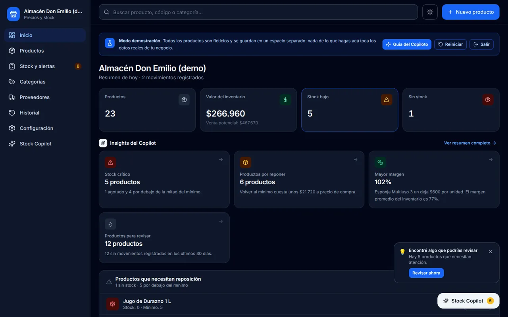

Gestor de Precios y Stock
Digitalizar los procesos de un pequeño comercio con una herramienta simple y accesible.
- Problema
- Almacenes y kioscos controlan precios y stock a mano; se pierden márgenes y quiebres de stock.
- Solución
- App mobile-first que funciona sin internet, con alertas de stock y un asistente que analiza el inventario real.
Ver detalle técnico
Implementado
- Productos, categorías, proveedores e historial
- Stock mínimo y alertas de stock bajo
- Costos, precios y margen
- Importar/exportar CSV compatible con Excel (separador
,o;, validación fila por fila) - Varias monedas de la región (CLP, ARS, MXN, PEN, COP…)
- Stock Copilot: análisis local del inventario y acciones masivas con confirmación
- Modo demo aislado de los datos reales
En desarrollo
- APK de Android (proyecto Capacitor + compilación en GitHub Actions)
- Copilot con IA remota (función serverless lista; la clave vive solo en el servidor)
Planificado
- Lotes, fecha de recepción y vencimientos
- Rotación FIFO / LIFO
- Etiquetas de precio
- Cuentas y sincronización en la nube
- Mi aporte
- Definí el producto y sus requisitos, diseñé la interfaz y desarrollé la app con asistencia de IA; la probé y la publiqué.
- Aprendizaje
- Separar el almacenamiento en una capa de adaptadores para poder migrar a una base de datos en la nube sin tocar la interfaz.